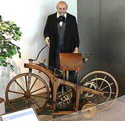

Motocicleta ou motociclo, também conhecida simplesmente como moto ou mota, é um veículo motorizado de duas rodas dirigido por um guidão a partir de um assento tipo assento. Uma motocicleta é amplamente definida por lei na maioria dos países para fins de registro, tributação e licenciamento de condutores como um veículo motorizado de duas rodas. A maioria dos países distingue entre ciclomotores de 49 cc e os veículos maiores e mais potentes, incluindo motocicletas do tipo scooter.
A Daimler Reitwagen de 1885, fabricada por Gottlieb Daimler e Wilhelm Maybach na Alemanha, foi a primeira motocicleta de combustão interna movida a petróleo. Em 1894, Hildebrand Wolfmüller tornou-se a primeira motocicleta de produção em série.
Os designs das motocicletas variam muito para atender a uma variedade de finalidades diferentes: viagens de longa distância, deslocamento diário, esportes e passeios off-road. O motociclismo é andar de moto e estar envolvido em outras atividades sociais relacionadas, como ingressar em um clube de motociclismo e participar de comícios de motociclistas.
Globalmente, as motocicletas são numericamente comparáveis aos carros como meio de transporte: em 2021, aproximadamente 58,6 milhões de novas motocicletas foram vendidas em todo o mundo, enquanto 66,7 milhões de carros foram vendidos no mesmo período. Em 2022, os quatro maiores produtores de motocicletas em volume e tipo foram Honda, Yamaha, Kawasaki e Suzuki. De acordo com o Departamento de Transportes dos Estados Unidos, o número de mortes por quilômetro percorrido pelo veículo foi 37 vezes maior para motocicletas do que para carros.
A primeira motocicleta movida a petróleo com combustão interna foi a Daimler Reitwagen. Foi projetada e construído pelos inventores alemães Gottlieb Daimler e Wilhelm Maybach em Bad Cannstatt, Alemanha, em 1885. Este veículo era diferente das bicicletas seguras ou dos velocípedes da época, pois tinha zero grau de ângulo do eixo de direção e nenhum deslocamento do garfo e, portanto, não usava os princípios de dinâmica de bicicletas e motocicletas desenvolvidos quase 70 anos antes. Em vez disso, ele dependia de duas rodas estabilizadoras para permanecer em pé enquanto girava. Os inventores chamaram sua invenção de Reitwagen ("carro de passeio"), que, na verdade, foi projetado como um teste para seu novo motor, em vez de um verdadeiro protótipo de veículo.
O primeiro projeto comercial para uma bicicleta autopropelida foi um projeto de três rodas chamado Butler Petrol Cycle, concebido por Edward Butler na Inglaterra em 1884. Ele exibiu seus planos para o veículo no Stanley Cycle Show em Londres em 1884. O veículo foi construído pela empresa Merryweather Fire Engine em Greenwich, em 1888. O Butler Petrol Cycle era um veículo de três rodas, com a roda traseira acionada diretamente, motor plano duplo de quatro tempos (com ignição magnética substituída por bobina e bateria) equipado com válvulas rotativas e carburador alimentado por flutuação (cinco anos antes de Maybach ) e direção Ackermann, todos de última geração na época. A partida era feita por ar comprimido. O motor era refrigerado a líquido, com radiador sobre a roda motriz traseira. A velocidade era controlada por meio de uma alavanca de válvula borboleta . Nenhum sistema de freio era instalado; o veículo era parado levantando e abaixando a roda motriz traseira por meio de uma alavanca acionada pelo pé; o peso da máquina era então suportado por duas pequenas rodas giratórias. O motorista estava sentado entre as rodas dianteiras. O produto não foi, no entanto, um sucesso, pois Butler não conseguiu encontrar apoio financeiro suficiente.
Muitas autoridades excluíram as motocicletas elétricas, a vapor ou os veículos de duas rodas movidos a diesel da definição de 'motocicleta' e consideram a Daimler Reitwagen a primeira motocicleta do mundo. Dado o rápido aumento no uso de motocicletas elétricas em todo o mundo, definir apenas veículos de duas rodas movidos a combustão interna como 'motocicletas' é cada vez mais problemático. As primeiras motocicletas de combustão interna (movidas a petróleo), como a Reitwagen alemã, foram, no entanto, também as primeiras motocicletas práticas.
Se um veículo de duas rodas com propulsão a vapor for considerado uma motocicleta, então as primeiras motocicletas construídas parecem ser o velocípede a vapor francês Michaux-Perreaux, cujo pedido de patente foi depositado em dezembro de 1868,construído na mesma época que o velocípede a vapor americano Roper, construído por Sylvester H. Roper de Roxbury, Massachusetts, que vinha demonstrando sua máquina em feiras e circos no leste dos Estados Unidos desde 1867. Roper construiu cerca de dez carros a vapor e bicicletas desde a década de 1860 até sua morte em 1896.

Réplica da Daimler Reitwagen, a primeira motocicleta movida por um motor a combustão